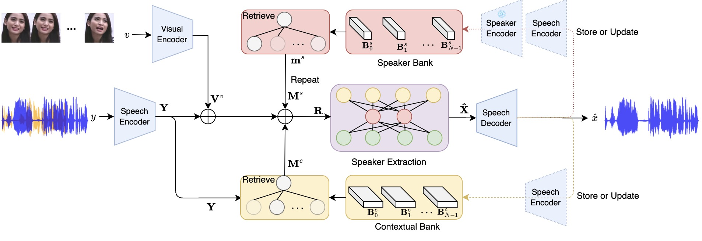
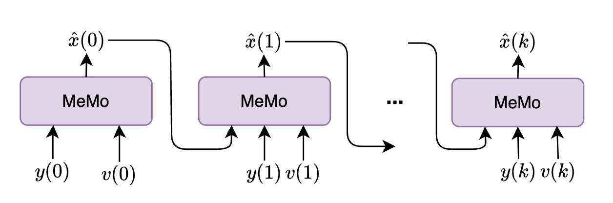
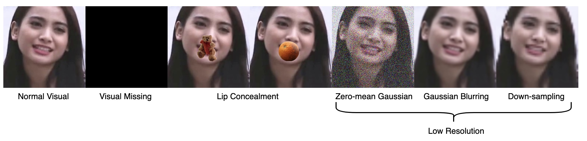
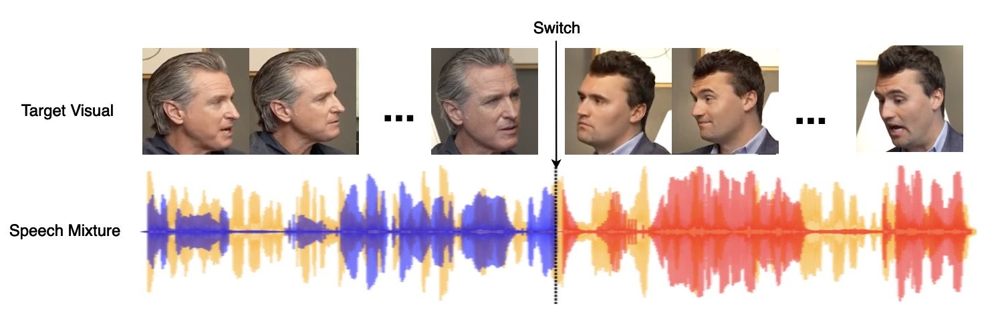
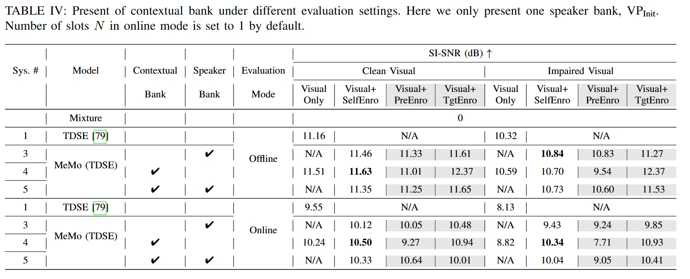
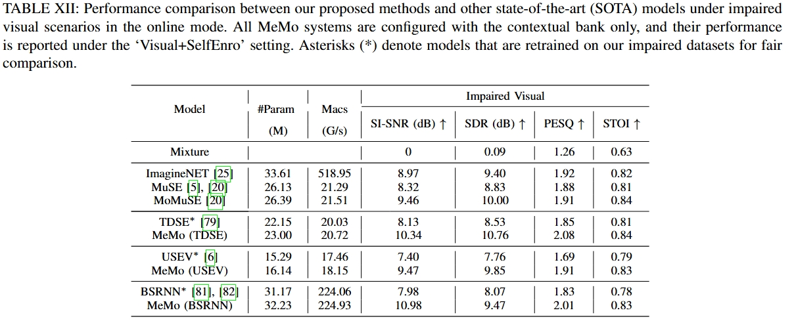
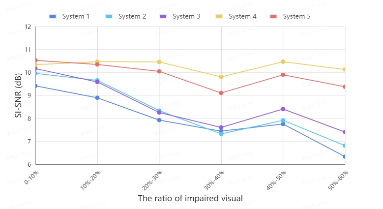
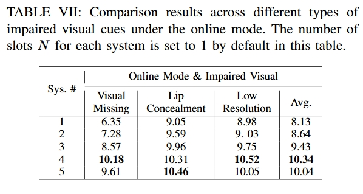
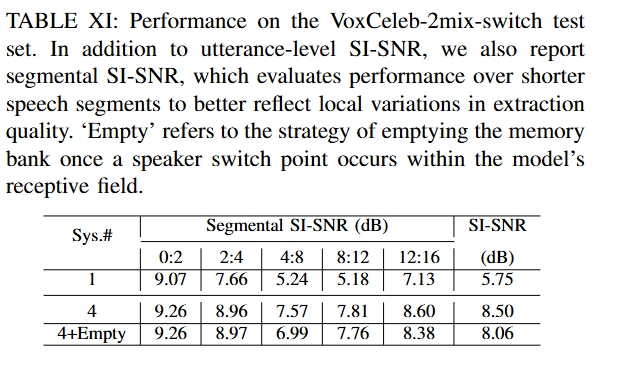

Look once to hear — keep attention on the target speaker even when visual cues vanish.
MeMo is a generalizable concept that plugs into various model architectures — it consistently keeps attention on the target speaker even without visual information.
Two adaptive memory banks — a speaker bank and a contextual bank — turn the model's own past outputs into a persistent attention signal.


We simulate realistic visual impairments and dynamic speaker-switching conversations to stress-test robustness.


MeMo delivers consistent gains across impairment types, ratios, backbones, and speaker-switching scenarios.





Watch the mixture, then compare the extracted target speakers. Best with headphones.
Mixture
Mixture
Mixture
Mixture
Mixture